About me...
MSc [2021-2023] in Physics at University of Minho in Braga, Portugal
BSc [2018-2021] in Physics at University of Minho in Braga, Portugal
 ORCID: 0009-0003-8417-3610
Email: franciscolobo1880@gmail.com
ORCID: 0009-0003-8417-3610
Email: franciscolobo1880@gmail.com
ORCID: 0009-0003-8417-3610Published papers and preprints
At a total of 1 published paper and 1 arXiv preprint.
Fluxoid solitons in superconducting tapered tubes and bottlenecks
Tim Kokkeler, Mateo Uldemolins, Francisco Lobo, F. Sebastian Bergeret, Elsa Prada, Pablo San-Jose
Submitted 23th of October, 2025
Free access at arXiv cond-mat
Exponential suppression of the topological gap in self-consistent intrinsic Majorana nanowires
Francisco Lobo, Elsa Prada, Pablo San-Jose
Physical Review B (PRB)
Published 12th of May, 2025
Free access at arXiv cond-mat
Github repository to replicate figures
Supplementary notes on HFB theory
Slides presentation
Scholar thesis
Excitonic properties of hBN from a time-dependent Hartree-Fock mean-field theory
Francisco Lobo, Nuno Peres, Bruno Amorim
MSc thesis published August 2023
Free access at UM repositorium
Slides presentation
Dark Solitons and Breathers as solutions of the NonLinear Schrödinger Equation
Francisco Lobo, Yuliy Bludov
BSc thesis published August 2021
Slides presentation
Research logs
Works in progress. Errors may be present. Corrections and additions are greatly appreciated.
Research logs on: Green's functions formalism
Supplementary worksheet
Updated February 2025
Research logs on: Magnetism
Supplementary worksheet
Yet to update
Research logs on: Superconductivity
Supplementary worksheet
Updated May 2025
Rough notes
Errors may be present. Corrections and additions are greatly appreciated.
Rough notes on: Graphene
Updated December 2022Attended conferences

Superconductor Semiconductor Hybrids, 2026, Grenoble
Emergence of Quantum Phases, 2025, Madrid
Quantum Designer's Special Edition, 2025, San Sebastián
Superconductor-Semiconductor Hybrids, 2025, København
March Meeting, 2025, Anaheim
CMD31, 2024, Braga
Quantum Matter, 2024, Porto
Workshop on Criticality, 2023, Évora
CMD30 FisMat, 2023, Milano
Emergence of Quantum Phases, 2023, Madrid
Quantum Matter Summer School, 2022, Tomar
Toddler's School on Quantum Matter, 2021, Online